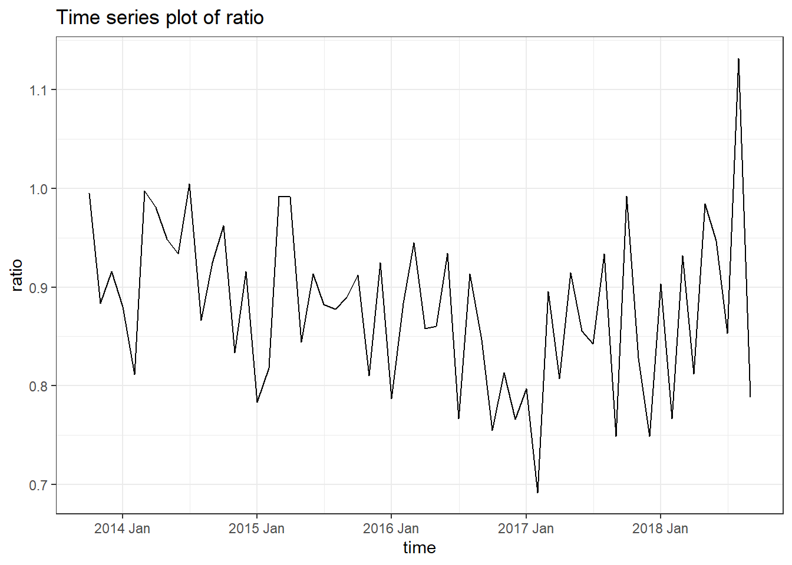
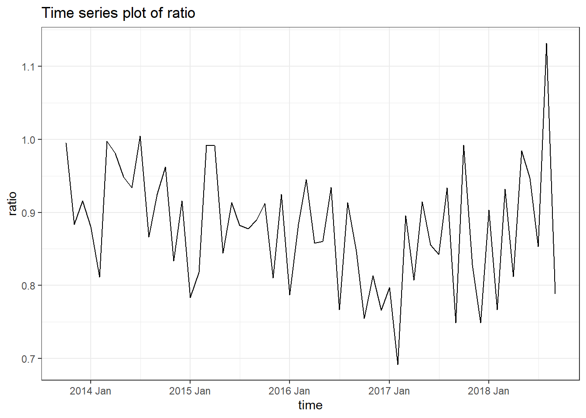
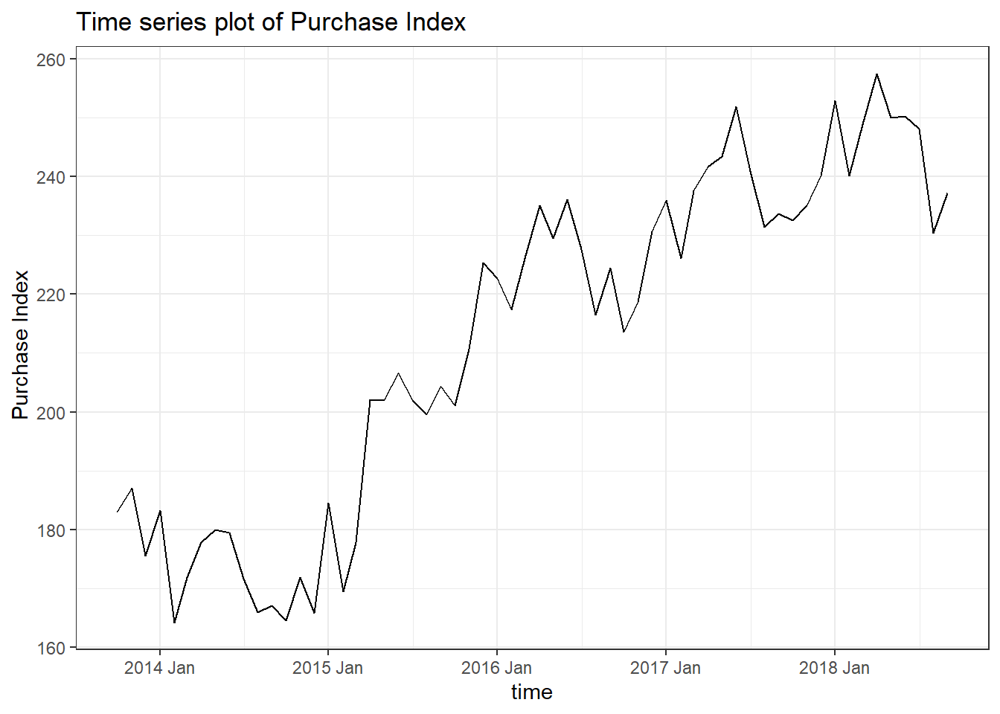
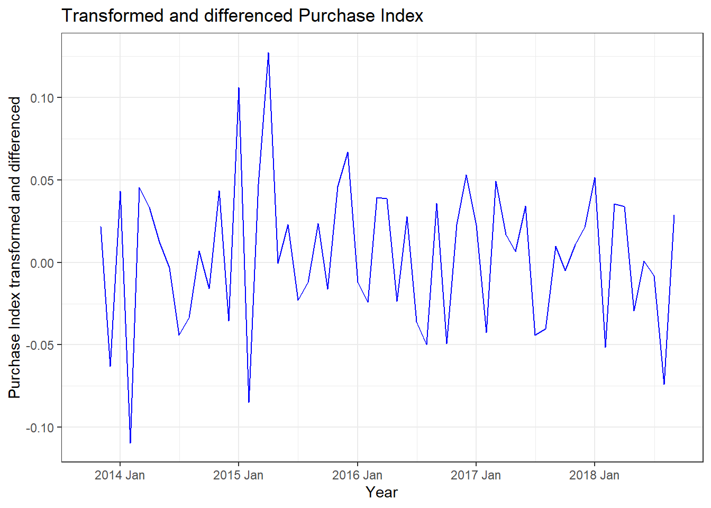

Code
#Time series plot for ratio
datanew %>%
ggplot() +
geom_line(aes(time,ratio)) +
theme_bw() +
ggtitle("Time series plot of ratio") +
xlab("time") +
ylab("ratio")
The ratio plot has a lot of fluctuations in the time series plot with a steep dip in 2017.
#Time series plot for ratio
datanew %>%
ggplot() +
geom_line(aes(time,ratio)) +
theme_bw() +
ggtitle("Time series plot of ratio") +
xlab("time") +
ylab("ratio")
The data is stationery.
data_trans <- datanew %>%
mutate(data_log = log1p(ratio))
#data_trans %>%
#ggplot() +
#geom_line(aes(time, data_log)) +
#geom_line(aes(time, data_boxcox),color='blue') +
#theme_bw() +
#ggtitle("Transformed ratio data") +
#ylab("ratio data transformed") +
#xlab("Year")Purchase Index follows an increasing curve after the dip in 2015.
#Time series plot for Purchase Index
datanew %>%
ggplot() +
geom_line(aes(time,PIndex)) +
theme_bw() +
ggtitle("Time series plot of Purchase Index") +
xlab("time") +
ylab(" Purchase Index")
Variable X is “non-stationary”.
#Checking for mean stationarity for Purchase Index column
data_roll <- datanew %>%
mutate(
close_mean_PIndex = zoo::rollmean(
PIndex,
k = 12,
fill = NA),
close_sd_PIndex = zoo::rollapply(
PIndex,
FUN = sd,
width = 12,
fill = NA)
)
data_rollmean_PIndex <- data_roll %>%
ggplot() +
geom_line(aes(time, PIndex)) +
geom_line(aes(time, close_mean_PIndex),color='blue') +
theme_bw() +
ggtitle("Mean of Purchase Index over time") +
ylab("Purchase Rate") +
xlab("Time")wd=log(xt)-log(xt-1)
data_trans_2 = data_trans_2 %>%
mutate(data_log_PIndex = log1p(PIndex),
value_log_diff_PIndex = data_log_PIndex - lag(data_log_PIndex))
data_trans_2 %>%
ggplot() +
geom_line(aes(time, value_log_diff_PIndex),color = 'blue') +
theme_bw() +
ggtitle("Transformed and differenced Purchase Index") +
ylab("Purchase Index transformed and differenced") +
xlab("Year")
Variable x is now “stationary”.
Purchase Index: xt
ratio: yt
Since both these series are nonstationary we have transformed them first before the Granger Causality test.
Δxt = log(xt) − log (xt-1)
Δyt = log(𝑦t) − log (𝑦t-1)
xh = Δxt
yh = Δyt
#Granger causality test
#grangertest(value_log_diff ~ value_log_diff_PIndex, order = 4, data = data_final)
#Dynamic regression
yh <- embed(data_final$ratio,5)
xh <- embed(data_final$value_log_diff_PIndex,5)
mh <- lm(yh[,1] ~ yh[,2:5] + xh)
summary(mh)
Call:
lm(formula = yh[, 1] ~ yh[, 2:5] + xh)
Residuals:
Min 1Q Median 3Q Max
-0.12267 -0.04787 -0.00822 0.04263 0.17066
Coefficients:
Estimate Std. Error t value Pr(>|t|)
(Intercept) 0.4786 0.2124 2.254 0.02914 *
yh[, 2:5]1 -0.1326 0.1456 -0.911 0.36722
yh[, 2:5]2 0.4656 0.1574 2.958 0.00492 **
yh[, 2:5]3 0.3845 0.1616 2.380 0.02161 *
yh[, 2:5]4 -0.2613 0.1661 -1.573 0.12263
xh1 0.2283 0.2847 0.802 0.42680
xh2 -0.3262 0.2752 -1.185 0.24212
xh3 -0.3132 0.2860 -1.095 0.27920
xh4 0.0681 0.2688 0.253 0.80117
xh5 0.4661 0.2625 1.776 0.08249 .
---
Signif. codes: 0 '***' 0.001 '**' 0.01 '*' 0.05 '.' 0.1 ' ' 1
Residual standard error: 0.07667 on 45 degrees of freedom
(1 observation deleted due to missingness)
Multiple R-squared: 0.3129, Adjusted R-squared: 0.1754
F-statistic: 2.277 on 9 and 45 DF, p-value: 0.03366#ANOVA
mh2 <- lm(yh[,1] ~ yh[,2:5])
anova(mh, mh2)Analysis of Variance Table
Model 1: yh[, 1] ~ yh[, 2:5] + xh
Model 2: yh[, 1] ~ yh[, 2:5]
Res.Df RSS Df Sum of Sq F Pr(>F)
1 45 0.26450
2 50 0.30034 -5 -0.035844 1.2196 0.3156.Therefore, we can conclude that because of the high p-value of the Anova test between model 1 and 2, we can conclude that Purchase Index does not Granger-cause ratio.